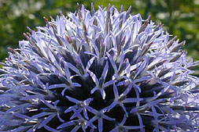
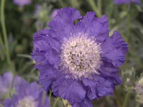
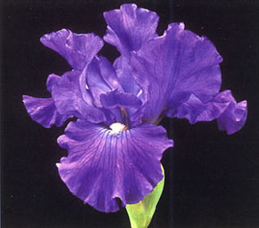
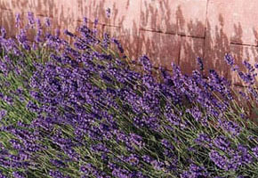
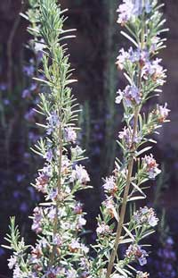

Echinops ritro
The globe thistle is a compact perennial with globe-like flower heads. At first flowers are metallic with the full blue colour developing as they open. The spiky leaves have a white underside.

Scabiosa caucasica
This variety produces large lavender blue flowers up to 3" wide. Excellent for cutting – in fact this encourages further flowering. Also called the Pincushion flower.

Viola odorata
Nothing can compare to the delicious scent of sweet violets in the spring. Easily grown, they will flower best when given sunlight in the spring, and some shade in the summer. This variety is 'Baronne Alice de Rothschild (1894)'.

Bearded iris hybrid 'Mary Constance'
The delicate petals are sweetly fragranced. This classic mid-blue iris grows well in the garden.

Lavandula angustifolia 'Hidcote'
One of the most important plants in herbal medicine and aromatherapy, with many lovely varieties.

Rosmarinus officinalis
Grown for its looks (it flowers in early spring) and scent as well as for culinary purposes. Delicious with roast lamb!